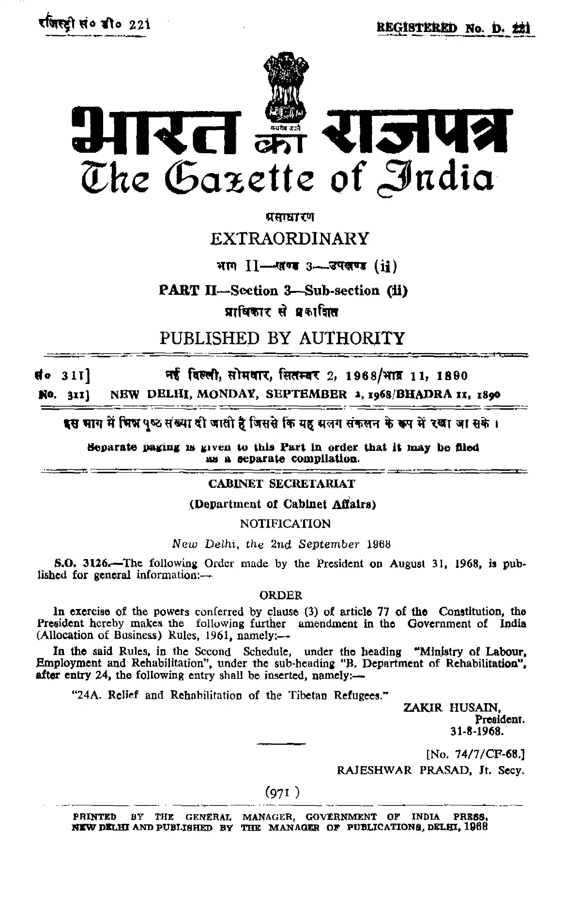

Amendment #70 (S.O. 3126, 1968)
1 change: 0 to the First Schedule, 1 to the Second Schedule. 1 applied
The order, page by page
Page 1 of 2

Page 2 of 2
after Schedule 2 › Ministry of Labour, Employment and Rehabilitation › Department of Rehabilitation › entry 24
- 24A. Relief and Rehabilitation of the Tibetan Refugees.
applied at schedule 2 › ministry Ministry of Labour, Employment & Rehabilitation › department B › entry 24A in the Rules after #70
How this document was read
From the Government of India (Allocation of Business) Rules, 1961 and their amendments, as published by the Cabinet Secretariat (cabsec.gov.in), read by orgpedia. The readings of the older scanned gazettes have known gaps.